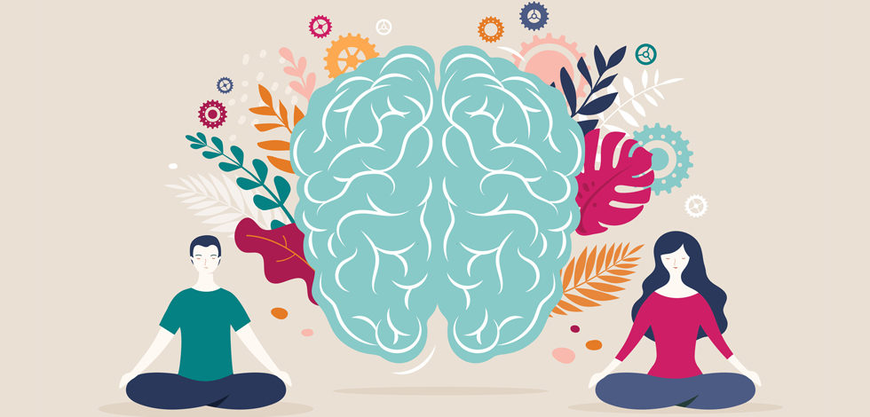

El Impacto del Canon de Belleza en la Sociedad Contemporánea
En la sociedad actual, el canon de belleza establece estándares estéticos que individuos de todas las edades, géneros y culturas se esfuerzan por alcanzar. Este fenómeno no solo influye en nuestras percepciones de la belleza, sino que también afecta profundamente la salud mental y física de las personas, modelando interacciones sociales y patrones de consumo.
La presión por cumplir con los ideales de belleza impuestos por la industria y los medios de comunicación puede generar inseguridades, trastornos alimenticios, depresión y ansiedad. La constante exposición a imágenes retocadas y cuerpos "perfectos" puede distorsionar la percepción de la realidad y fomentar la comparación y la autocrítica.
Es fundamental reconocer y cuestionar los estándares de belleza impuestos, promoviendo la diversidad, la inclusión y la aceptación de la individualidad. La belleza no debería ser un requisito para la valía personal, sino una expresión de la diversidad y la autenticidad de cada individuo.
La salud mental y emocional son aspectos fundamentales de nuestro bienestar integral, y es esencial promover una cultura de aceptación y respeto hacia todas las formas, tamaños y colores. Al desafiar los ideales de belleza establecidos, podemos construir una sociedad más inclusiva, empática y equitativa para todas las personas.